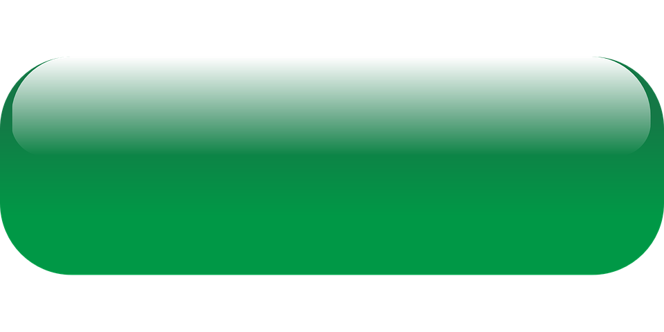

A New Beginning
Hello there!
My name is Professor Razzberry, assistant to Professor Oak.
I would like to congratulate you on the beginning of your Pokemon trainer journey. Now that everything is digital and we can send Pokemon to regions everywhere, this digital tool will guide you through choosing and having your first Pokemon set and ready to pick up at whichever region's lab you reside in.
Sound exciting yeah? Let's get started!
The Starters
- Bulbasaur
- Chikorita
- Snivy
- Charmander
- Cyndaquil
- Chimchar
- Totodile
- Oshawott
- Squirtle
Grass
Grass starters are typically best for new trainers, they're calm, patient and easy to train. They are intelligent and very helpful companions. Grass starters are weak to fire and powerful against water.
Some popular grass starters include:
If you're considering a grass starters then return press the green button to browse through our options.

Fire
Fire starters are just as their name suggests: quick to temper and a little difficult to train. Fire starters are great for trainers who want a challenge, as they can be harder to handle in the beginning. Fire starters are strong against grass and weak to water.
Some popular fire starters include:
If you're considering a fire starter then return press the red button to browse through our options.
Water
Water starters are great baseline Pokemon. They have just the right amount of energy for budding trainers just excited to start their journey. They're fun companions and often very playful, providing a good balance between learning to train and enjoying the journey! Water starters are strong against fire and weak to grass.
Some popular water starters include:
If you're considering a water starter then return press the blue button to browse through our options.